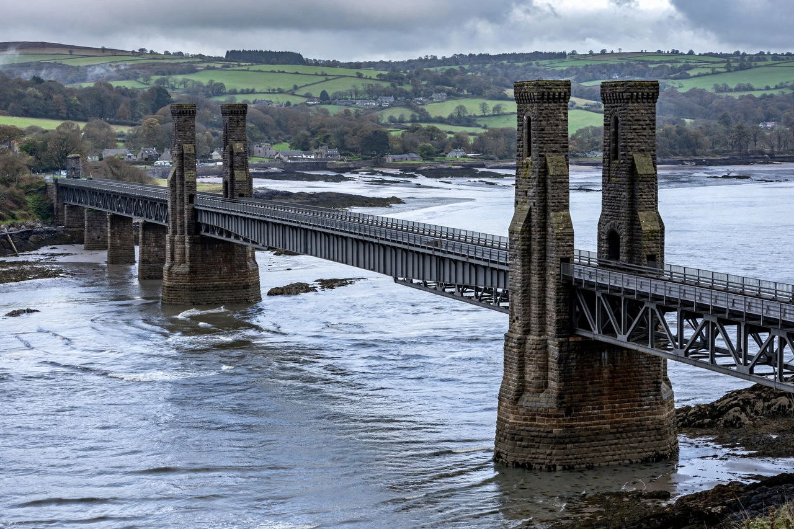

| Britannia Bridge | |
|---|---|
 Britannia Bridge over the Menai Strait | |
| Location | Menai Strait, Gwynedd–Anglesey, Wales |
| Opened | 1850 (rail); road deck added 1980 |
| Designer | Robert Stephenson |
| Total length | 461 m (1,512 ft) |
| Carries | Railway (lower) and A55 road (upper) |
The Britannia Bridge (Welsh: Pont Britannia) crosses the Menai Strait between the island of Anglesey and the mainland of Wales. Designed by Robert Stephenson and opened in 1850 as a railway bridge of revolutionary wrought-iron tubular girders, it now also carries the A55 dual carriageway on a deck added above the railway.
The bridge was built for the Chester and Holyhead Railway to complete the rail link to Ireland. Stephenson, working with William Fairbairn and Eaton Hodgkinson, developed the box-girder concept through famous experiments: trains ran inside two enormous rectangular iron tubes, each assembled from riveted plates and floated out into the strait and jacked into place between three masonry towers. The entrances were guarded by four monumental stone lions. The design directly enabled Stephenson's similar Conwy Railway Bridge nearby.
In May 1970 a fire started by trespassing youths severely damaged the iron tubes, which sagged and had to be replaced. The bridge was rebuilt with steel arches supporting the rail deck on the original towers, reopening to trains in 1972; a road deck above opened in 1980, finally giving Anglesey a fixed road crossing alongside Telford's Menai Suspension Bridge of 1826.